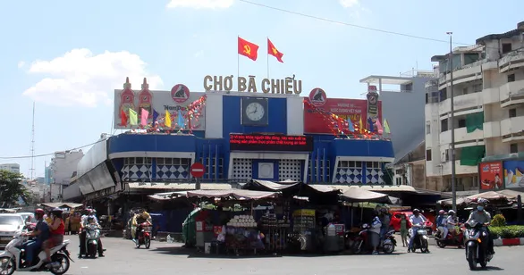

Quận 1
-
Nhà thờ Đức Bà
Địa chỉ: 1 Công xã Paris, Bến Nghé, Quận 1, TP. Hồ Chí Minh
Giá vé: Miễn phí (vé vào cửa không tính phí, nhưng có thể cần trả phí nếu tham gia tour có hướng dẫn)
Đánh giá tổng quan: Nhà thờ Đức Bà là một trong những công trình kiến trúc đặc sắc và nổi tiếng nhất tại TP. Hồ Chí Minh. Với kiến trúc cổ kính mang đậm phong cách Pháp, nhà thờ thu hút khách du lịch và những tín đồ tôn giáo. Đây là địa điểm lý tưởng để tham quan và chụp ảnh. Khu vực xung quanh có nhiều quán cà phê, thích hợp để thư giãn.
-
Bảo tàng Lịch sử Việt Nam
Địa chỉ: 2 Nguyễn Bỉnh Khiêm, Bến Nghé, Quận 1, TP. Hồ Chí Minh
Giá vé: 20,000 - 40,000 VND/người
Đánh giá tổng quan: Bảo tàng Lịch sử Việt Nam là nơi lưu giữ nhiều hiện vật quý giá, giúp du khách hiểu thêm về lịch sử, văn hóa và các nền văn minh của Việt Nam. Với hơn 30.000 hiện vật, bảo tàng này phù hợp cho những ai yêu thích khám phá các di tích lịch sử. Tuy nhiên, không gian bảo tàng có thể không hiện đại bằng những bảo tàng quốc tế, nhưng vẫn rất đáng để tham quan.
-
Chợ Bến Thành
Địa chỉ: Lê Lợi, Phường Bến Thành, Quận 1, TP. Hồ Chí Minh
Giá vé: Miễn phí (bạn chỉ cần chi tiêu khi mua sắm)
Đánh giá tổng quan: Chợ Bến Thành là một trong những biểu tượng nổi tiếng của TP. Hồ Chí Minh. Chợ nổi bật với các mặt hàng thủ công mỹ nghệ, đồ gia dụng, quần áo, thực phẩm và các món đặc sản. Đây là điểm đến lý tưởng để mua sắm quà lưu niệm và thưởng thức các món ăn đặc trưng của Sài Gòn. Chợ mở cửa từ sáng sớm đến tối.


Quận 2
-
Công viên Bách Tùng Diệp
Địa chỉ: 62 Nguyễn Thị Định, Thạnh Mỹ Lợi, Quận 2, TP. Hồ Chí Minh
Giá vé: Miễn phí
Đánh giá tổng quan: Công viên này là không gian lý tưởng để thư giãn với các khu vực đi bộ, vườn hoa, và sân chơi cho trẻ em. Nơi đây cũng có những khu vực cho thể thao như bóng đá, cầu lông. Đặc biệt, công viên này có không gian xanh thoáng mát, thích hợp cho các buổi picnic gia đình hoặc tụ tập bạn bè.
-
Khu đô thị Thủ Thiêm
Địa chỉ: Khu đô thị Thủ Thiêm, Quận 2, TP. Hồ Chí Minh
Giá vé: Miễn phí (tùy khu vực tham quan)
Đánh giá tổng quan: Khu đô thị Thủ Thiêm là một dự án quy hoạch hiện đại với các tòa nhà cao tầng, khu thương mại và văn phòng. Đây là nơi bạn có thể tham quan các công trình kiến trúc độc đáo và các khu vực đang phát triển. Mặc dù không phải là một điểm tham quan truyền thống, nhưng khu vực này được nhiều người yêu thích vì không gian đẹp và sự phát triển mạnh mẽ của nó.
-
Snow Town
Địa chỉ: 27 Mai Chí Thọ, Thủ Thiêm, Quận 2, TP. Hồ Chí Minh
Giá vé: Khoảng 200.000 - 300.000 VNĐ (tuỳ theo độ tuổi và các dịch vụ đi kèm)
Đánh giá tổng quan: Snow Town là một công viên giải trí đặc biệt dành cho những ai muốn trải nghiệm không khí mùa đông tại TP. Hồ Chí Minh. Với không gian tuyết nhân tạo, nơi đây mang đến các hoạt động thú vị như trượt tuyết, xây người tuyết, và các trò chơi mùa đông khác. Đây là điểm đến lý tưởng cho gia đình và các nhóm bạn trẻ muốn thử cảm giác mới lạ.

Quận 3
-
Bảo tàng Mỹ thuật TP. HCM
Địa chỉ: 97A Phó Đức Chính, Quận 1, TP. Hồ Chí Minh (gần Quận 3)
Giá vé: 30.000 VNĐ (người lớn); 15.000 VNĐ (học sinh, sinh viên)
Đánh giá tổng quan: Bảo tàng Mỹ thuật TP. Hồ Chí Minh nằm trong một tòa nhà cổ có kiến trúc Pháp rất đẹp. Đây là nơi trưng bày các tác phẩm nghệ thuật của các nghệ sĩ Việt Nam qua các thời kỳ, từ các tác phẩm hội họa, điêu khắc đến các tác phẩm nghệ thuật đương đại. Đây là một địa điểm tuyệt vời để tìm hiểu về nghệ thuật Việt Nam cũng như chiêm ngưỡng những kiệt tác nghệ thuật độc đáo.
-
Công viên Tao Đàn
Địa chỉ: 55C Nguyễn Thị Minh Khai, Quận 3, TP. Hồ Chí Minh
Giá vé: Miễn phí
Đánh giá tổng quan: Công viên Tao Đàn là một trong những công viên lớn và nổi tiếng tại TP. Hồ Chí Minh. Với không gian xanh mát, nhiều cây cổ thụ và các tiểu cảnh đẹp mắt, đây là nơi lý tưởng để thư giãn, đi bộ hoặc tổ chức các hoạt động ngoài trời. Công viên còn là nơi tổ chức các sự kiện văn hóa, thể thao trong suốt năm.
-
Chùa Ngọc Hoàng
Địa chỉ: 73 Mai Thị Lựu, Quận 3, TP. Hồ Chí Minh
Giá vé: Miễn phí (tuy nhiên có thể có phí cho các nghi lễ hoặc nếu tham gia tour)
Đánh giá tổng quan: Chùa Ngọc Hoàng là một trong những ngôi chùa nổi tiếng và linh thiêng tại TP. Hồ Chí Minh. Chùa có kiến trúc đẹp, nhiều tượng Phật và thần linh, tạo không gian yên tĩnh và linh thiêng. Đây là điểm tham quan lý tưởng cho những ai muốn tìm hiểu về tôn giáo và văn hóa của người Việt.
Quận 4
-
Chợ Xóm Chiếu
Địa chỉ: 64 Xóm Chiếu, Quận 4, TP. Hồ Chí Minh
Giá vé: Miễn phí
Đánh giá tổng quan: Chợ Xóm Chiếu nổi bật với không khí địa phương và các mặt hàng thủ công, thực phẩm tươi sống. Đây là nơi lý tưởng để tìm hiểu văn hóa mua sắm của người dân Sài Gòn và thưởng thức các món ăn đặc trưng. Chợ rất đông đúc, phù hợp cho những ai yêu thích khám phá cuộc sống đời thường tại các khu chợ truyền thống.
-
Cầu Mống
Địa chỉ: Cầu Mống, Quận 4, TP. Hồ Chí Minh
Giá vé: Miễn phí
Đánh giá tổng quan: Cầu Mống là một trong những cây cầu nổi tiếng ở Sài Gòn, mang đậm dấu ấn lịch sử của thành phố. Đây là điểm tham quan lý tưởng để ngắm cảnh sông Sài Gòn và chụp ảnh, đặc biệt là vào lúc hoàng hôn. Cầu có không gian thoáng đãng và là một trong những địa điểm đẹp để thư giãn.
-
KizCiti
Địa chỉ: Khu công viên Khánh Hội, đường Hoàng Diệu, Phường 2, Quận 4,TP. Hồ Chí Minh
Giá vé: Khoảng 150.000 đồng - 185.000 đồng
Đánh giá tổng quan: Khu vui chơi KizCiti còn có một tên gọi khác là thành phố hướng nghiệp cho trẻ, đây là khu vui chơi kết hợp với giáo dục và rèn luyện các kỹ năng xã hội. Nơi đây sẽ tạo dựng nên môi trường làm việc của người lớn như: Ngân hàng, bệnh viện, trường học,...cho các bé thỏa sức khám phá và thực hiện ước mơ trừ khi còn nhỏ.
Quận 5
-
Chợ Lớn (Khu phố người Hoa)
Địa chỉ: Chợ Lớn, Quận 5, TP. Hồ Chí Minh
Giá vé: Miễn phí (bạn chỉ cần chi tiêu khi mua sắm)
Đánh giá tổng quan: Chợ Lớn là khu phố người Hoa nổi tiếng với nhiều cửa hàng bán đồ gia dụng, thực phẩm, và các sản phẩm truyền thống của người Hoa. Đây là điểm đến lý tưởng để tham quan và trải nghiệm văn hóa ẩm thực, cũng như tìm hiểu về đời sống của cộng đồng người Hoa tại TP. Hồ Chí Minh. Khu vực này cũng có nhiều ngôi chùa và di tích lịch sử đặc sắc.
-
Chùa Bà Thiên Hậu
Địa chỉ: 710 Nguyễn Trãi, Quận 5, TP. Hồ Chí Minh
Giá vé: Miễn phí
Đánh giá tổng quan: Chùa Bà Thiên Hậu là một trong những ngôi chùa nổi tiếng của cộng đồng người Hoa tại TP. Hồ Chí Minh. Ngôi chùa này có kiến trúc cổ kính, với các tượng thờ, tranh vẽ và các công trình tâm linh đặc sắc. Đây là điểm tham quan lý tưởng để tìm hiểu về tín ngưỡng và văn hóa của cộng đồng người Hoa tại Việt Nam.
-
Bảo tàng Chứng tích chiến tranh
Địa chỉ: 28 Võ Văn Tần, Quận 5, TP. Hồ Chí Minh
Giá vé: 40,000 - 50,000 VND/người
Đánh giá tổng quan: Bảo tàng Chứng tích chiến tranh là nơi lưu giữ những hình ảnh, tài liệu và hiện vật liên quan đến chiến tranh Việt Nam. Bảo tàng này giúp du khách hiểu rõ hơn về lịch sử chiến tranh của đất nước qua các bức ảnh, trang thiết bị và các hiện vật chiến tranh. Đây là một điểm đến tuyệt vời cho những ai quan tâm đến lịch sử.
Quận 6
-
Chùa Giác Lâm
Địa chỉ: 118 Lạc Long Quân, Quận 6, TP. Hồ Chí Minh
Giá vé: Miễn phí (có thể có phí cho các nghi lễ)
Đánh giá tổng quan: Chùa Giác Lâm là một trong những ngôi chùa cổ nhất tại TP. Hồ Chí Minh. Với không gian yên tĩnh và kiến trúc đẹp mắt, chùa là nơi thích hợp để du khách tìm hiểu về tôn giáo và thư giãn. Chùa có nhiều pho tượng Phật và tiểu cảnh đẹp mắt, là một điểm đến lý tưởng để tham quan và chiêm bái.
-
Công viên Phú Lâm
Địa chỉ: Phú Lâm, Quận 6, TP. Hồ Chí Minh
Giá vé: Miễn phí
Đánh giá tổng quan: Công viên Phú Lâm là một trong những công viên lớn tại TP. Hồ Chí Minh, với không gian rộng lớn và nhiều cây xanh. Đây là nơi lý tưởng để đi bộ, chạy bộ, tổ chức các hoạt động ngoài trời hoặc chỉ đơn giản là thư giãn. Công viên còn có các khu vực dành cho trẻ em và các gia đình.
-
Chợ Bình Tây
Địa chỉ: 57A Tháp Mười, Phường 2, Quận 6, Tp. HCM
Giá vé: Miễn phí
Đánh giá tổng quan:Tọa lạc tại 57A Tháp Mười, phường 2, quận 6, chợ Bình Tây được xem là một trong những khu chợ buôn lớn nhất Sài Gòn. Chợ có 12 cổng được thiết kế bởi thương nhân người Hoa và đây cũng là nơi tập trung nhiều người Hoa nhất. Chợ có khoảng 2300 quầy sạp và hầu hết các mặt hàng tại chợ Bình Tây sẽ bán đồ sỉ. Giá cả tại chợ cũng được bình ổn khá nhiều nên bạn không phải lo bị chém giá đâu nhé.

Quận 7
-
Khu đô thị Phú Mỹ Hưng
Địa chỉ: Phú Mỹ Hưng, Quận 7, TP. Hồ Chí Minh
Giá vé: Miễn phí (có phí cho các dịch vụ đặc biệt như tham quan bằng thuyền hoặc ăn uống tại nhà hàng)
Đánh giá tổng quan: Khu đô thị Phú Mỹ Hưng nổi bật với cơ sở hạ tầng hiện đại, các trung tâm thương mại lớn, công viên xanh mát, và khu vực sống cao cấp. Đây là nơi lý tưởng để tham quan, dạo phố, thư giãn tại các quán cà phê hoặc ăn uống tại các nhà hàng sang trọng. Ngoài ra, bạn cũng có thể tham gia các hoạt động thể thao như golf, tennis hay dạo chơi bằng thuyền trên sông.
-
Công viên Hồ Bán Nguyệt
Địa chỉ: Khu đô thị Phú Mỹ Hưng, Quận 7, TP. Hồ Chí Minh
Giá vé: Miễn phí
Đánh giá tổng quan: Công viên Hồ Bán Nguyệt là một trong những không gian xanh lớn ở khu đô thị Phú Mỹ Hưng, với hồ nước hình bán nguyệt tạo nên cảnh quan tuyệt đẹp. Đây là nơi lý tưởng cho các hoạt động thể dục, thể thao, hoặc đơn giản là dạo bộ thư giãn. Công viên còn có nhiều khu vực vui chơi cho trẻ em và các quán cà phê ven hồ.
-
Sài Gòn Exhibition & Convention Center (SECC)
Địa chỉ: 799 Nguyễn Văn Linh, Quận 7, TP. Hồ Chí Minh
Giá vé: Miễn phí (tùy vào từng sự kiện)
Đánh giá tổng quan: SECC là một trong những trung tâm triển lãm và hội nghị lớn nhất tại TP. Hồ Chí Minh. Đây là nơi tổ chức nhiều sự kiện quốc tế, triển lãm, hội thảo và các hoạt động văn hóa. Nếu bạn đến vào thời gian diễn ra sự kiện, đây sẽ là một nơi thú vị để tham quan và trải nghiệm các hoạt động nổi bật.
Quận 8
-
Chợ Bình Đông
Địa chỉ: 195 Bến Bình Đông, Quận 8, TP. Hồ Chí Minh
Giá vé: Miễn phí (bạn chỉ cần chi tiêu khi mua sắm)
Đánh giá tổng quan: Chợ Bình Đông là một khu chợ nổi tiếng tại Quận 8, chuyên cung cấp các mặt hàng thực phẩm tươi sống, thủy hải sản và các sản phẩm truyền thống của miền Tây Nam Bộ. Đây là nơi lý tưởng để tham quan và tìm hiểu về cuộc sống của người dân địa phương. Chợ đặc biệt sôi động vào các buổi sáng sớm, thích hợp cho những ai muốn khám phá ẩm thực và văn hóa địa phương.
-
Chùa An Phú
Địa chỉ: 24 Phạm Hùng, P.10, Quận 8, TP. Hồ Chí Minh
Giá vé: Miễn phí
Đánh giá tổng quan: Chùa An Phú là ngôi chùa được tạo từ các mảnh sành, mảnh sứ phế liệu và đã đạt kỷ lục "Ngôi chùa được tạo tác bằng miểng sành nhiều nhất Việt Nam" vào năm 2007. Khuôn viên chùa có rất nhiều công trình điêu khắc mang tính dân gian vô cùng hoành tráng. Nếu có thể hãy ghé đến để chiêm ngưỡng kiến trúc độc đáo của ngôi chùa và tìm hiểu thêm về văn hóa Phật giáo.
-
Nhà thờ Cha Tam
Địa chỉ: 25 Hồng Bàng, Quận 8, TP. Hồ Chí Minh
Giá vé: Miễn phí
Đánh giá tổng quan: Nhà thờ Cha Tam là một trong những nhà thờ có lịch sử lâu đời tại TP. Hồ Chí Minh. Với kiến trúc cổ điển và không gian yên tĩnh, nhà thờ thu hút nhiều du khách và người dân địa phương đến tham quan. Đây cũng là một điểm đến lý tưởng để tìm hiểu về tôn giáo và văn hóa của người Công giáo tại TP. Hồ Chí Minh.
Quận 9
-
Khu du lịch Suối Tiên
Địa chỉ: 120 Xa Lộ Hà Nội, Phường Tân Phú, Quận 9, TP. Hồ Chí Minh
Giá vé: 80,000 - 150,000 VND/người (tùy vào từng khu vực tham quan)
Đánh giá tổng quan: Khu du lịch Suối Tiên là một công viên giải trí lớn với các trò chơi hấp dẫn và không gian thiên nhiên tuyệt đẹp. Du khách có thể tham gia các trò chơi mạo hiểm, tham quan các tiểu cảnh, hay thư giãn tại các khu vực spa và vườn thú. Đây là một địa điểm lý tưởng cho gia đình và trẻ em, với nhiều hoạt động vui chơi và tham quan.
-
Công viên ánh sáng Vinhomes Grand Park
Địa chỉ: 530 Nguyễn Xiển, Phường Long Thạnh Mỹ, Quận 9, TP.HCM
Giá vé: Miễn phí
Đánh giá tổng quan: Được lấy ý tưởng từ Grand By The Bay (Singapore) và có diện tích cực khủng lên đến 36ha, công viên ánh sáng Vinhomes Grand Park với 15 công viên nhỏ bên trong có chủ đề đa dạng, mang đến những trải nghiệm độc đáo, thú vị, phù hợp với mọi lứa tuổi. Một số chủ đề nổi bật của công viên ánh sáng Vinhomes Grand Park như: Bãi cỏ quảng trường, con đường tình yêu, khu vườn đèn lồng Nhật Bản, chèo thuyền kayak, gym ngoài trời, biển nhân tạo,... Đặc biệt, nơi đây còn thường xuyên tổ chức các sự kiện âm nhạc vào cuối tuần.
-
Đầm sen Tam Đa
Địa chỉ: Tam Đa, Trường Thạnh, Quận 9, TP. Hồ Chí Minh
Giá vé: 40.000 VND/người
Đánh giá tổng quan: Nếu bạn yêu thích hoa cỏ và thiên nhiên thì không nên bỏ qua Đầm sen Tam Đa. Với diện tích rộng lên đến 5ha, vườn trồng rất nhiều loài hoa khác nhau như sen, hoa hướng dương, hoa mười giờ, hoa sao nhái, hoa túy điệp… Ngoài ra, nơi đây cũng rất thích hợp để chụp hình sống ảo. Nơi đây còn có dịch vụ mướn áo dài, áo bà ba, áo yếm,… cho các bạn nữ dễ dàng chụp ảnh, tạo nên những bức ảnh thơ mộng bên hồ sen. Các bạn đến đây nhớ canh mùa và ngày để đến vào lúc sen nở đẹp nhất nhé!
Quận 10
-
Công viên Thỏ trắng
Địa chỉ: 875 Cách Mạng Tháng 8, Quận 10, TP. Hồ Chí Minh
Giá vé: Phụ thuộc vào mỗi trò chơi
Đánh giá tổng quan: Công viên Thỏ Trắng không chỉ là một khu vui chơi dành cho thiếu nhi với không gian rộng lớn cùng vô số những trò chơi mà bên trong còn có rất nhiều cửa hàng và quán cà phê. Ngoài ra, cách bày trí tại đây cũng rất bắt mắt, không gian thoáng đãng, các bạn trẻ vừa có thể thỏa sức vui chơi vừa chụp những bức hình sống ảo. Bên cạnh đó, bạn cũng có thể tổ chức các hoạt động dã ngoại, picnic cuối tuần tại đây cùng bạn bè, gia đình để tận hưởng trọn vẹn nhất có thể bầu không khí mát lành, thoải mái ở đây nhé!
-
Bảo Tàng Y học cổ truyền Việt Nam
Địa chỉ: 41 Hoàng Dư Khương, Quận 10, TP. Hồ Chí Minh
Giá vé: Khoảng 120.000 đồng/người lớn; Khoảng 60.000 đồng/trẻ em từ 10 đến 17 tuổi; miễn phí vé cho trẻ em dưới 9 tuổi
Đánh giá tổng quan: Bảo tàng y học Việt Nam trưng bày hơn 3.000 hiện vật y học từ thời kỳ đồ đá cho đến nay và là bảo tàng y học đầu tiên của Việt Nam. Đến tham quan, bạn sẽ được chiêm ngưỡng toàn bộ “tinh hoa y học cổ truyền Việt” từ bao thế hệ trước. Không chỉ vậy, bạn còn có thể tham gia tìm hiểu quá trình bào chế và bán thuốc thời xưa với những vật dụng được trưng bày như: Cân, dao cầu, thuyền tán, chày cối, hồ lô rượu, bình vôi, bát uống thuốc,… Ngoài ra, với kiến trúc cổ kính và không gian rộng rãi, bạn có thể cho ra đời những bức ảnh tuyệt đẹp và độc đáo.
-
Việt Nam Quốc Tự
Địa chỉ: 244 Đường 3 Tháng 2, Quận 10, TP. Hồ Chí Minh
Giá vé: Miễn phí
Đánh giá tổng quan: Việt Nam Quốc Tự sở hữu tòa tháp cao nhất Việt Nam với chiều cao 62 mét và có 30 tầng và quả chuông nặng nhất nước ta với chiều cao 2,9 mét và cân nặng lên đến 3 tấn. Ngôi chùa được thành lập vào năm 1963, do Giáo hội Phật giáo Việt Nam thống nhất xây dựng. Ngôi chùa có thiết kế độc đáo với tông màu chủ đạo là vàng và đỏ, toàn bộ mái hiên được làm từ chất liệu đá tự nhiên được điêu khắc tinh xảo. Việt Nam Quốc Tự được xem là biểu tượng của sự thống nhất trong 13 tổ chức Phật giáo. Nơi đây là một lựa chọn lý tưởng khi bạn muốn tránh xa những bộn bề cuộc sống và thư giãn tâm hồn. Việt Nam Quốc Tự không tuy nằm ngay trung tâm thành phố nhưng không hề ồn ào, tấp nập mà mang một bầu không khí bình yên, thanh thản lạ thường.
Quận 11
-
Công viên Đầm Sen
Địa chỉ: 3 Hòa Bình, Quận 11, TP. Hồ Chí Minh
Giá vé: 80,000 VND/người (người lớn), 50,000 VND/người (trẻ em)
Đánh giá tổng quan: Công viên Đầm Sen là một trong những khu vui chơi giải trí lớn và nổi tiếng nhất tại TP. Hồ Chí Minh. Công viên này có nhiều khu vực giải trí, bao gồm công viên nước, khu trò chơi, và các hoạt động văn hóa nghệ thuật. Đây là nơi lý tưởng cho các gia đình và trẻ em với các trò chơi thú vị và không gian xanh mát, thư giãn.
-
Khu vui chơi hướng nghiệp Kizworld
Địa chỉ: Parkson Flemington, 184 đường Lê Đại Hành, Phường 15, Quận 11, TP. Hồ Chí Minh
Giá vé: 90.000 - 180.000 đồng
Đánh giá tổng quan: Các phụ huynh có thể dẫn các bé của mình đến đây để các bé có thể thỏa sức sáng tạo và trải nghiệm. Các bé đến đây có thể tham gia nhiều hoạt động về những ngành nghề các bé yêu thích từ đó giúp các bé hiểu được phần nào công việc đó mình sẽ làm gì và khó khăn sẽ ra sao.
-
Nhà thi đấu Phú Thọ
Địa chỉ: 1 Lữ Gia, Phường 15, Quận 11, TP. Hồ Chí Minh
Giá vé: Miễn phí
Đánh giá tổng quan: Nhà thi đấu Phú Thọ được khởi công xây dựng vào năm 1932, nơi đây có sức chứa lên đến 5.000 người và tối đa là 8.000 người. Nơi đây thường xuyên tổ chức các sự kiện, triển lãm và vào những dịp cuối tuần các bạn có thể cùng người thân và bạn bè đến đây trải nghiệm những môn thể thao mới nhằm nâng cao sức khỏe.
Quận 12
-
Công viên Phần Mềm Quang Trung
Địa chỉ: 30/4, Quận 12, TP. Hồ Chí Minh
Giá vé: Miễn phí
Đánh giá tổng quan: Công viên Phần Mềm Quang Trung là một khu vực rộng lớn dành cho các hoạt động thể thao, dạo bộ và thư giãn. Khu vực này cũng là nơi tập trung nhiều công ty công nghệ, với không gian làm việc hiện đại và các dịch vụ tiện ích. Du khách có thể tận hưởng không gian yên tĩnh và khám phá các công trình sáng tạo tại khu công viên này.
-
Khu du lịch Bến Xưa quận 12
Địa chỉ: 39A Hà Huy Giáp, P. Thạnh Lộc, Quận 12, TP. Hồ Chí Minh
Giá vé: 328.000 đồng/ vé
Đánh giá tổng quan: Bến Xưa là địa điểm du lịch đặc sắc tọa lạc giữa lòng Sài Gòn tấp nập, quận 12. Với vị trí đẹp, nằm kế con sông Vàm Thuật, bao quanh là tán cây xanh mướt, không gian nơi đây là điểm thư giãn lý tưởng với những ai tìm kiếm sự yên tĩnh sau những ngày vội vã giữa thành phố xô bồ. Ngoài ra, khu du lịch này con nổi tiếng với công trình kiến trúc công phu, được thiết kế đậm nét Việt Nam, nếu có cơ hội bạn hãy một lần cùng gia đình và bạn bè đến để cùng chiêm ngưỡng trực tiếp vẻ đẹp của từng đường nét điêu khắc. Đặc biệt hơn, ở Bến Xưa còn được biết đến là một địa điểm có nhiều nhà hàng và dịch vụ ăn uống sang trọng, nổi tiếng với hương vị thơm ngon thuần Việt. Nếu có ghé qua quận 12, mà không một lần ghé qua khu du lịch Bến Xưa thì sẽ là một thiếu sót lớn.
-
Chùa Hoằng Pháp
Địa chỉ: 66 Nguyễn Văn Bứa, Quận 12, TP. Hồ Chí Minh
Giá vé: Miễn phí
Đánh giá tổng quan: Chùa Hoằng Pháp là một trong những ngôi chùa lớn và nổi tiếng của TP. Hồ Chí Minh, đặc biệt thu hút với không gian yên bình và thanh tịnh. Đây là nơi lý tưởng để tìm hiểu về Phật giáo, tham gia các hoạt động tâm linh, và thư giãn trong không gian rộng lớn của chùa. Chùa Hoằng Pháp cũng tổ chức nhiều lễ hội và khóa tu vào các dịp đặc biệt.
Quận Bình Thạnh
-
Công viên Văn Thánh
Địa chỉ: 48/10 Đường Nguyễn Hữu Cảnh, Quận Bình Thạnh, TP. Hồ Chí Minh
Giá vé: Miễn phí (có phí cho các dịch vụ như đi thuyền)
Đánh giá tổng quan: Công viên Văn Thánh là một không gian xanh lý tưởng để dạo bộ, thư giãn hoặc tổ chức các buổi picnic. Với khu vực rộng lớn, nhiều cây xanh, và các hồ nước, nơi đây rất thích hợp cho các hoạt động thể dục thể thao ngoài trời. Du khách cũng có thể thuê thuyền đi trên hồ hoặc thư giãn tại các quán cà phê trong khuôn viên công viên.
-
Chợ Bà Chiểu
Địa chỉ: Phường 1, Quận Bình Thạnh, TP. Hồ Chí Minh
Giá vé: Miễn phí (bạn chỉ cần chi tiêu khi mua sắm)
Đánh giá tổng quan: Chợ Bà Chiểu là một trong những chợ truyền thống lâu đời tại TP. Hồ Chí Minh, chuyên cung cấp các mặt hàng tươi sống, thực phẩm và đặc sản miền Nam. Nơi đây là điểm tham quan lý tưởng cho những ai muốn khám phá văn hóa chợ truyền thống, mua sắm các sản phẩm dân gian, hoặc thưởng thức các món ăn đặc trưng của người dân địa phương.

-
Hồ Bình Quới
Địa chỉ: 1147 Bình Quới, Quận Bình Thạnh, TP. Hồ Chí Minh
Giá vé: Miễn phí (có phí tham quan nhà vườn và ăn uống)
Đánh giá tổng quan: Hồ Bình Quới là một không gian yên tĩnh và xanh mát, lý tưởng cho những ai muốn tìm kiếm sự thanh bình giữa thành phố nhộn nhịp. Ngoài việc ngắm cảnh, du khách còn có thể thưởng thức các món ăn đặc sản tại các nhà hàng ven hồ, hoặc tham quan các khu vực nhà vườn, thưởng thức các dịch vụ giải trí thư giãn.
-
Landmark 81
Địa chỉ: 720A Điện Biên Phủ, Phường 22, quận Bình Thạnh, Thành phố Hồ Chí Minh.
Giá vé: Miễn phí
Đánh giá tổng quan: Landmark 81 là tòa nhà cao bậc nhất Đông Nam Á, nằm trong tổ hợp dự án Vinhomes Central Park tại Sài Gòn. Ở bất cứ đâu trong thành phố, bạn cũng dễ dàng nhìn thấy tòa nhà "chọc trời" này. Tuy nhiên để biết chính xác địa chỉ Landmark 81 ở đâu? Landmark 81 có gì ăn, có gì chơi?... thì không phải ai cũng rành. Bỏ túi ngay các thông tin quan trọng dưới đây nếu bạn đang muốn đến và trải nghiệm tại Landmark 81 nhé!

Quận Gò Vấp
-
Công viên Làng Hoa
Địa chỉ: 10 Lê Văn Thọ, Phường 7, Quận Gò Vấp, TP. Hồ Chí Minh
Giá vé: Miễn phí
Đánh giá tổng quan: Công viên Làng Hoa nổi bật với những vườn hoa đa dạng sắc màu. Đây là một không gian tuyệt vời để dạo bộ, thư giãn và tận hưởng vẻ đẹp thiên nhiên trong lòng thành phố. Công viên này cũng là nơi diễn ra nhiều lễ hội hoa vào các dịp lễ, Tết, thu hút nhiều du khách và người dân địa phương.
-
Quảng trường nhạc nước Hòa Bình
Địa chỉ: Cityland Park Hills, Quận Gò Vấp, TP. Hồ Chí Minh
Giá vé: Miễn phí
Đánh giá tổng quan: Quảng trường nhạc nước Hòa Bình tọa lạc tại KDC Cityland Park Hills với diện tích 15.000 m2 và được thiết kế với hệ thống vòi phun kết hợp đèn led đổi màu, sáng lung linh và ấn tượng mỗi khi phun nước đã tạo sức hút lớn đối với tất cả những ai tại Sài Gòn, nhất là giới trẻ hay đến đây để tạo những tấm ảnh cực chất.
-
Trung tâm Thương mại Emart
Địa chỉ: 366 Phan Văn Trị, Quận Gò Vấp, TP. Hồ Chí Minh
Giá vé: Miễn phí (chi phí mua sắm tùy theo nhu cầu)
Đánh giá tổng quan: Emart là một trong những trung tâm thương mại nổi tiếng tại Quận Gò Vấp. Với không gian hiện đại, đây là điểm đến lý tưởng cho những ai muốn mua sắm các mặt hàng điện tử, quần áo, thực phẩm hay đồ gia dụng. Ngoài ra, khu vực ẩm thực tại Emart cũng khá phong phú, thích hợp cho các buổi hẹn hò hoặc gặp gỡ bạn bè.
Quận Phú Nhuận
-
Công viên Phú Nhuận
Địa chỉ: 2 Nguyễn Văn Trỗi, Quận Phú Nhuận, TP. Hồ Chí Minh
Giá vé: Miễn phí
Đánh giá tổng quan: Công viên Phú Nhuận là một công viên nhỏ nhưng rất đẹp và thư giãn với nhiều cây xanh. Đây là một nơi tuyệt vời để đi dạo, tập thể dục, hoặc tổ chức các hoạt động ngoài trời như cắm trại, chơi thể thao. Công viên cũng có không gian rộng lớn cho trẻ em vui chơi.
-
Hồ bơi Rạch Miễu
Địa chỉ: 1 Hoa Phượng, Phường 2, Quận Phú Nhuận, TP. Hồ Chí Minh
Giá vé: 25.000 VND/ người
Đánh giá tổng quan: Hồ bơi Rạch Miễu là một trong những địa điểm bơi lội cực chất ở thành phố Hồ Chí MInh. Hồ có kích thước là 50mx25mx2m, nếu bạn là tín đồ của môn thể thao bơi lội thì đừng bỏ qua địa điểm này nhé.
-
Nhà thi đấu Quân khu 7
Địa chỉ: 202 Hoàng Văn Thụ,Phường 9, Quận Phú Nhuận, TP. Hồ Chí Minh
Giá vé: Miễn phí (chi phí mua sắm tùy theo nhu cầu)
Đánh giá tổng quan: Nhà thi đấu Quân khu 7 với sức chứa hơn 20.000 người, là nơi tổ chức của nhiều sự kiện lớn - nhỏ trong nước. Cùng với đó, bên trong nhà thi đấu có sân cầu lông vô cùng rộng rãi, đầy đủ
Quận Tân Bình
-
Công viên Hoàng Văn Thụ
Địa chỉ: 10 Hoàng Văn Thụ, Quận Tân Bình, TP. Hồ Chí Minh
Giá vé: Miễn phí
Đánh giá tổng quan: Công viên Hoàng Văn Thụ là một không gian xanh rộng lớn, rất thích hợp cho các hoạt động thể thao, dạo bộ, và picnic. Công viên có nhiều khu vực bóng đá, tennis, và hồ nước đẹp, thu hút đông đảo người dân địa phương vào những dịp cuối tuần.
-
Chợ Tân Bình
Địa chỉ: 11-15 Phạm Văn Hai, Quận Tân Bình, TP. Hồ Chí Minh
Giá vé: Miễn phí (bạn chỉ cần chi tiêu khi mua sắm)
Đánh giá tổng quan: Chợ Tân Bình là một khu chợ lớn tại TP. Hồ Chí Minh, chuyên cung cấp các mặt hàng thực phẩm tươi sống, đặc sản và đồ gia dụng. Nếu bạn muốn khám phá một khu chợ sầm uất, nơi bán nhiều món ăn đường phố và đặc sản địa phương, Chợ Tân Bình là điểm đến lý tưởng.
-
Chùa Viên Giác
Địa chỉ: 193 Bùi Thị Xuân, Phường 1, Quận Tân Bình, TP. Hồ Chí Minh
Giá vé: Miễn phí
Đánh giá tổng quan: Chùa Viên Giác hiện tọa lạc tại tại số 193 Bùi Thị Xuân - Quận Tân Bình mang lại cảm giác an lạc thanh tịnh trong kiến trúc Phật giáo cổ kính uy nghiêm. Một trong những ấn tượng chính là hình ảnh ngôi chùa với chiếc mái cong cong hòa quyện vào cảnh vật thiên nhiên những lúc sương mờ hay nắng tắt. Nơi đây sẽ làm nơi giúp bạn được thanh tịnh, thức tĩnh được tâm hồn và tìm thấy được hướng giải quyết cho những rối ren cuộc sống.
Quận Tân Phú
-
Pandora Shopping Mall
Địa chỉ: 1 TTTM Pandora, Trường Chinh, Phượng Tây Thạnh, Quận Tân Phú, TP. Hồ Chí Minh
Giá vé: Miễn phí
Đánh giá tổng quan: Pandora City nằm tại vị trí đắc địa trên mặt tiền đường Trường Chinh - một trong những tuyến đường chính của quận Tân Phú. Nơi đây sở hữu tòa nhà cao 5 tầng và có 1 tầng hầm, cung cấp nhiều tiện ích đáp ứng nhu cầu mua sắm và giải trí của cả gia đình. Đây cũng là nơi tập trung nhiều thương hiệu thời trang nổi tiếng, hồ bơi sạch đẹp, khu vui chơi, nhà hàng ẩm thực,... Đặc biệt, tầng cao nhất của Pandora City sẽ mang lại cho bạn một không gian tuyệt vời với tầm nhìn toàn cảnh về sân bay Quốc tế Tân Sơn Nhất, giúp bạn thư giãn và xua tan căng thẳng, lo lắng.
-
Ice Coffee
Địa chỉ: 76 Tân Quý, Phường Tân Quý, Quận Tân Phú, TP. Hồ Chí Minh
Giá vé: Miễn phí
Đánh giá tổng quan: Ice Coffee - nơi vui chơi hấp dẫn tại quận Tân Phú mà bạn không thể bỏ lỡ. Như tên gọi, quán được làm hoàn toàn bằng băng và giữ nhiệt độ ở dưới -10 độ C. Để khách hàng không bị ảnh hưởng bởi nhiệt độ quá thấp, quán đã chuẩn bị những chiếc áo chuyên dụng giúp giữ ấm tốt nhất, đảm bảo quý khách hàng sẽ có một buổi hẹn thú vị. Với diện tích hơn 70m2 được thiết kế từ nhiều khối băng độc đáo, Ice Coffee chắc chắn sẽ khiến bạn phải ngỡ ngàng. Ngoài ra, thực đơn của quán cũng khá đa dạng. Bạn có thể thưởng thức một tách cà phê ấm áp trong một không gian giống như ở xứ sở Hàn Quốc.
-
Aeon Mall Tân Phú
Địa chỉ: 30 Bờ Bao Tân Thắng, Sơn Kỳ, Quận Tân Phú, TP. Hồ Chí Minh
Giá vé: Miễn phí (chi phí mua sắm tùy theo nhu cầu)
Đánh giá tổng quan: AEON Mall Tân Phú là trung tâm thương mại hiện đại, nổi bật với các cửa hàng thời trang, siêu thị, khu ẩm thực, và khu vui chơi giải trí. Đây là điểm đến lý tưởng cho các hoạt động mua sắm, ăn uống và thư giãn với không gian rộng rãi, thoải mái.
Quận Bình Tân
-
AEON MALL Bình Tân
Địa chỉ: 1 đường số 17A, Bình Trị Đông B, Quận Bình Tân, TP. Hồ Chí Minh
Giá vé: Miễn phí
Đánh giá tổng quan: AEON MALL Bình Tân là trung tâm mua sắm và vui chơi giải trí nổi tiếng bậc nhất Bình Tân với hàng trăm gian hàng đa dạng về món ăn, thức uống và những nơi giải trí nổi bật như: Rạp chiếu phim, khu trò chơi,..
-
Chùa Huệ Nghiêm
Địa chỉ: KP2 Đỗ Năng Tế, Phường An Lạc, Quận Bình Tân, TP. Hồ Chí Minh
Giá vé: Miễn phí (bạn chỉ cần chi tiêu khi mua sắm)
Đánh giá tổng quan: Nhắc đến địa điểm tham quan văn hóa tâm linh nhất định phải ghé thăm tại Bình Tân thì chắc chắn không thể bỏ lỡ chùa Huệ Nghiêm - ngôi chùa được mệnh danh là chốn “bồng lai tiên cảnh” giữa lòng đô thị. Với không gian vô cùng yên bình, khuôn viên rộng thoáng, nhiều cây xanh sẽ mang đến cho bạn sự thanh thản và lắng đọng tâm hồn khi ghé nơi đây.
-
Chùa Từ Hạnh
Địa chỉ: 574 Kinh Dương Vương, Phường An Lạc, Quận Bình Tân, TP. Hồ Chí Minh
Giá vé: Miễn phí
Đánh giá tổng quan: Nếu bạn đang tìm kiếm một địa điểm yên bình để quay về nuôi dưỡng tâm hồn sau thời gian bận rộn thì hãy ghé thăm chùa Từ Hạnh để trải nghiệm không gian Phật pháp thanh tịnh nhé!
Quận Thủ Đức
-
Khu du lịch Suối Tiên
Địa chỉ: 120 Xa Lộ Hà Nội, Phường Tân Phú, Quận Thủ Đức, TP. Hồ Chí Minh
Giá vé: 150,000 VND/người lớn, 100,000 VND/trẻ em
Đánh giá tổng quan: Khu du lịch Suối Tiên là một trong những điểm đến giải trí nổi tiếng tại TP. Hồ Chí Minh, với các công trình kiến trúc hoành tráng và các khu vui chơi dành cho trẻ em, các hoạt động thể thao và tham quan các danh lam thắng cảnh. Đây là một khu vui chơi phù hợp cho cả gia đình, đặc biệt là trẻ em.
-
Bảo tàng Dân tộc học Việt Nam
Địa chỉ: 2 Nguyễn Văn Hưởng, Phường Bình Thọ, Quận Thủ Đức, TP. Hồ Chí Minh
Giá vé: 40,000 VND/người lớn, 10,000 VND/trẻ em
Đánh giá tổng quan: Bảo tàng Dân tộc học Việt Nam là nơi lưu giữ nhiều hiện vật và tài liệu về các dân tộc của Việt Nam. Đây là điểm tham quan lý tưởng cho những ai yêu thích tìm hiểu về văn hóa và lịch sử của các dân tộc Việt Nam. Các triển lãm thường xuyên thay đổi, cung cấp một cái nhìn sâu sắc về các nền văn hóa phong phú.
-
Công viên Tưởng Niệm Liệt Sĩ
Địa chỉ: 88 Trương Văn Bang, Phường Linh Đông, Quận Thủ Đức, TP. Hồ Chí Minh
Giá vé: Miễn phí
Đánh giá tổng quan: Công viên Tưởng Niệm Liệt Sĩ là một công viên lịch sử nằm ở khu vực Thủ Đức, nơi tưởng niệm những người lính đã hy sinh trong các cuộc chiến tranh. Công viên có không gian yên tĩnh và phù hợp cho các hoạt động dạo bộ, tìm hiểu về lịch sử và văn hóa. Đây là nơi lý tưởng cho những ai yêu thích khám phá lịch sử của đất nước.